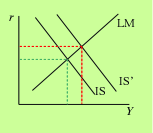
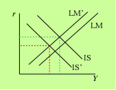
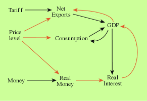

Students—and others—often find macro tricky… Why? Since its birth in the mid-20th century the luminaries of macroeconomics made great efforts to explain, exemplified by Hicks's brilliant invention of a diagram of simultaneous equilibrium in the money and goods markets to explain the core of Keynes's theory. Yet the problem remains: macroeconomics is not obvious. For example, why does the interest rate rise when a tariff on imports is imposed? Or, to take another example: why does GDP fall when the price level rises, and what happens to the interest rate?
Convincing answers to questions like these must trace out logical sequences of cause and effect. A tariff depresses imports and hence raises the foreign balance (net exports) and thereby total expenditure at any given real interest rate, producing a rightward shift of the IS curve.

Thus there is a new set of interest rate and GDP combinations which are consistent with equilibrium in the market for goods and services. This now interacts with the unchanged set of interest rate and GDP combinations which are consistent with equilibrium in the money market (the LM curve) to yield a new overall equilibrium in both markets, in which both GDP and the interest rate are higher than they were before the tariff was imposed.
In the second example, the rise in the price level depresses real money balances which, with a given level of real expenditure, drives up the interest rate;
 thus the LM curve shifts upwards.
The increased price level also reduces real wealth when some part of it is held in nominal form, and thereby reduces consumption (the Pigou effect); it also makes domestic output less competitive than foreign products if the nominal exchange rate is fixed, so reducing net exports. These effects on the expenditure system shift the IS curve left. Hence the result that GDP falls while the effect on the interest rate is ambiguous.
Negative influences are shown in red. The causal interpretation of the graph is obvious, and qualitative inferences are readily deduced from it by mere inspection: to find the effect of an increase in any exogenous variable on any other variable, simply trace out and sign all of the paths connecting the two variables. The sign of a path is established by the number of red segments in it: an odd number implies that that causal path has a negative effect. If there is more than one path between the two variables and all paths have the same sign, then the overall qualitative effect of the exogenous change is unambiguous; otherwise it is ambiguous.
Thus we see that an increased tariff raises GDP because the (single) path is composed of two positive segments. The real interest rate is also increased.
Now consider the consequences of an increased price level: it must depress GDP because all three paths have negative influence. But it is also clear that the overall effect on the interest rate is ambiguous because it is the net outcome of a positive influence coming via money supply—the Keynes effect—and two separate negative influences via money demand—the Pigou effect and the balance of payments effect.
It will not have escaped attention that the graph contains three feedback loops, which might be thought problematic for the simple inferences we have just drawn. But that is not so, at least if we are prepared to assume that the system is stable—and it is easy to show that this simple IS-LM model is stable. Indeed stability is characteristic of most sensible models of the economy.